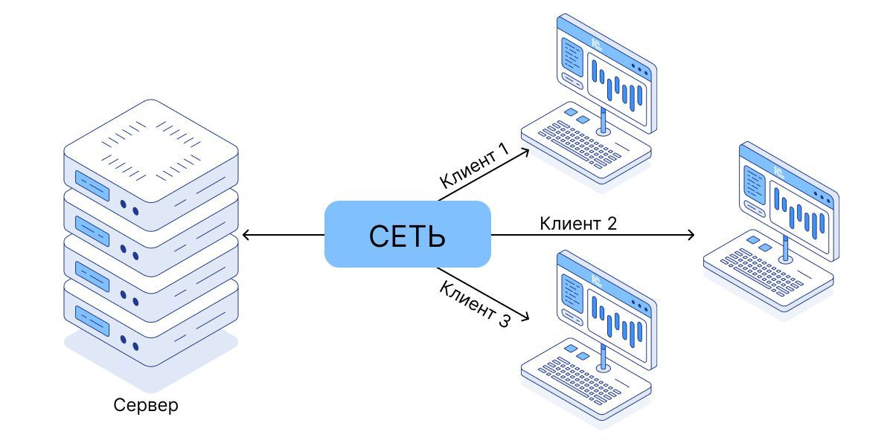

Системное администрирование информационно-коммуникативных и операционных систем Windows & Linux
Системный администратор — это специалист, который обеспечивает бесперебойную работу информационной инфраструктуры организации. Он настраивает серверы, следит за состоянием сетей, управляет учётными записями пользователей и защищает данные от угроз. Работа сисадмина требует терпения, внимательности и глубокого понимания того, как взаимодействуют между собой операционные системы, приложения и «железо».
Введение в профессиюКто такой системный администратор?
В зависимости от размера компании задачи сисадмина могут сильно различаться. В небольшой фирме один человек совмещает роли эникейщика, сетевого инженера и администратора баз данных. В крупной корпорации эти обязанности распределены между целыми отделами.
Ключевые обязанности сисадмина
- Установка и обновление операционных систем Windows и Linux.
- Настройка сетевого оборудования: маршрутизаторов, коммутаторов, VPN.
- Резервное копирование и восстановление данных.
- Мониторинг производительности серверов и рабочих станций.
- Управление правами доступа и политиками безопасности.
- Документирование конфигураций и инцидентов.
Базовые навыки для старта
- Уверенное владение командной строкой (
cmd,PowerShell,bash). - Понимание модели
OSIи стека протоколовTCP/IP. - Работа с виртуальными машинами:
VMware,VirtualBox,Hyper-V. - Знание основ
Active DirectoryиLDAP. - Умение читать логи и пользоваться системами мониторинга.
Полезный совет новичку
Начинайте с лаборатории дома: поставьте VirtualBox, поднимите пару виртуальных машин — Windows Server и Ubuntu Server. Пробуйте, ломайте, восстанавливайте.
Только через практику приходит настоящее понимание.

Windows и Linux: два мира — одна цель
Операционные системы семейства Windows и Linux решают схожие задачи, но подходят к ним по- разному. Windows славится удобным графическим интерфейсом и тесной интеграцией с корпоративными сервисами Microsoft. Linux ценится за гибкость, открытость и стабильность при работе под высокой нагрузкой.
Краткое сравнение:
| Windows Server | Linux (на примере Ubuntu Server) | |
|---|---|---|
| Интерфейс | Графический + PowerShell | Преимущественно консоль |
| Пакетный менеджер | winget / MSI | apt / yum / dnf |
| Типичное применение | Active Directory, Exchange | Веб-серверы, контейнеры |
Подробнее про каждую из систем можно почитать в официальной документации Microsoft и в руководстве для администраторов Ubuntu.
Что важно помнить
Технологии меняются быстро, но фундаментальные принципы остаются: понимание сети, файловой системы и процессов пригодится всегда. Не гонитесь за модными инструментами — сначала освойте базу.
Заключение
Системное администрирование — это не просто работа с «железом» и софтом. Это искусство поддерживать порядок там, где всё стремится к хаосу. Если вам нравится разбираться в деталях, решать головоломки и видеть результат своего труда — эта профессия для вас.
Удачи в обучении!